地政学
ソウルは軍事境界線から近く、漢江の橋や地下鉄、政府機能、通信網が安全保障の感覚と日常を結びつける。北東アジアの緊張は街の配置にも残る都市圏である。外交、徴兵、災害対応も暮らしの近くにある境界都市。

🇰🇷 韓国 / アジア / World City Atlas
漢江、軍事境界線、財閥産業、集合住宅、Kカルチャーが重なり、東アジアの緊張と創造力を日常の速度で映す首都圏。
都市の骨格
漢江の南北に広がる都市は、北方の安全保障、財閥本社、大学、宗教施設、地下鉄、集合住宅を一つの生活圏として動かしている。
ソウルは軍事境界線から近く、漢江の橋や地下鉄、政府機能、通信網が安全保障の感覚と日常を結びつける。北東アジアの緊張は街の配置にも残る都市圏である。外交、徴兵、災害対応も暮らしの近くにある境界都市。
半導体、通信、金融、映像、音楽、ゲーム、医療、教育が集まり、財閥本社と中小企業、配送、飲食、介護、清掃の労働が密接に連動する巨大な首都圏。長時間労働と若者雇用の不安も見える。技能差も雇用を分ける都市。
儒教的な家族記憶、仏教寺院、キリスト教会、近代化の傷跡、大学街の議論、Kカルチャーの制作現場が近距離で重なり、祈りと消費が共存する。民主化と分断の記憶も街に残る。祭礼、家族観、記念館も歩く視点になる都市。
集合住宅、学習塾、地下鉄、漢江公園、市場、明洞、弘大、江南、王宮は、住民の生活費と観光客の視線を同じ街路に置く。速さと圧力のある都市だ。食、夜景、住宅費が旅と生活を結ぶ。夜の食堂と市場も欠かせない。
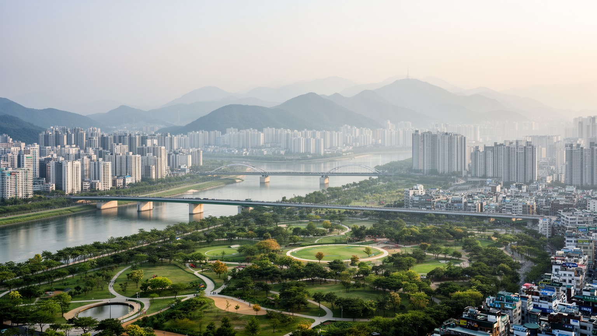
ソウルの都市構造は、漢江を中心に読むと輪郭がはっきりする。北側には王宮、旧都心、政府機能、大学、歴史的な街路が重なり、南側には江南の業務地、集合住宅、教育産業、消費空間が強く広がった。川はかつて防衛線であり、物流路であり、都市の外縁を決める自然条件でもあったが、橋と地下鉄が増えるにつれて巨大な生活圏を結ぶ軸になった。朝夕の通勤、週末の公園利用、花火、サイクリング、再開発は、川を単なる景観ではなく日常の装置にしている。一方で、北方の山地と軍事境界線の近さ、南方へ伸びる衛星都市の拡大は、都市が自由に広がれない条件を示す。ソウルは狭い盆地に集中した首都であり、住宅、学校、病院、企業、文化施設を高密度で配置しながら、川と山に挟まれた地形を使い続けている。漢江の水面は開放感を与えるが、橋の渋滞や沿岸再開発は階層差も映す。川を渡ることは、職場、学校、家賃、余暇の選択を変える行為でもある。都市を理解するには、名所の点ではなく、川を越える移動の線を見る必要がある。洪水対策や河川公園の整備は、気候と余暇、住宅価値を同時に動かす政策でもある。橋の名と駅の位置は、住民の記憶や地域の序列を細かく刻み、川沿いの開発は都市の未来像を争う舞台になっている。また、川沿いの公共空間は世代や所得を越えて人が集まる貴重な余白であり、密集都市に休息を与える。
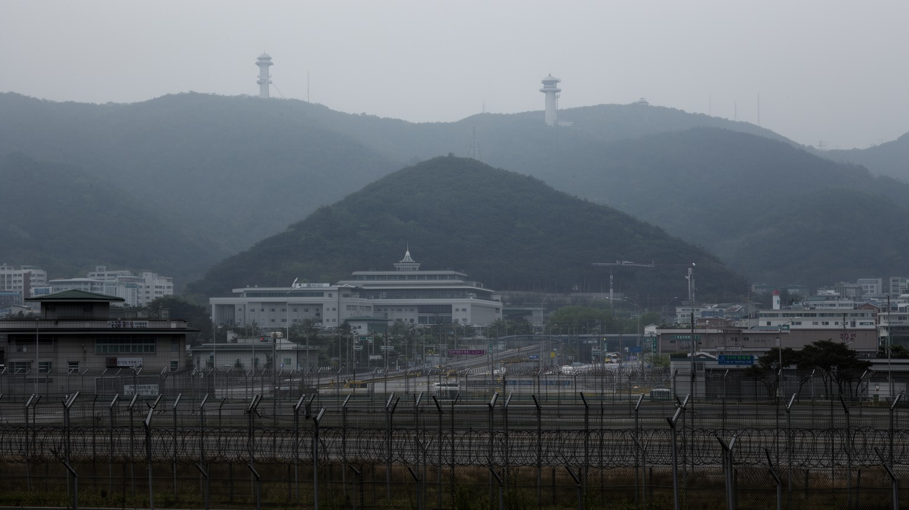
ソウルは世界有数の大都市でありながら、軍事境界線から遠くない場所にある。北朝鮮との緊張は、国会や大統領府、軍施設、地下空間、通信インフラ、防空訓練、ニュースの語り方にまで影を落とす。住民は日々の買い物や通勤の中で常に危機を意識しているわけではないが、地図を少し北へ伸ばせば、分断の現実がすぐに現れる。DMZ観光は観光商品であると同時に、休戦体制の不安定さを可視化する経験でもある。ミサイル、サイバー攻撃、宣伝放送、外交交渉、米軍との関係は、都市の安全を国家間の力学に結びつける。経済と文化の発信地であるソウルが安全保障の前線にも近いことは、首都機能の集中を強みにも弱みにもする。避難施設や橋、鉄道、空港の運用は、平時の便利さと危機時の対応を同時に考えなければならない。分断家族の記憶、徴兵制、戦争記念施設、民主化運動の記憶は、街の中で政治を遠い話にしない。華やかな繁華街の背後に、休戦下の首都としての緊張が静かに残っている。安全保障は軍事だけでなく、電力、通信、病院、地下鉄、学校を止めない都市運営の問題でもある。市民は危機に慣れすぎず、しかし日常を保つために、緊張を生活の背景へ押し込めて暮らしている。国際ニュースが動くたび、為替、株価、観光、航空便、留学計画まで揺れるため、安全保障は家計や仕事にもつながる。
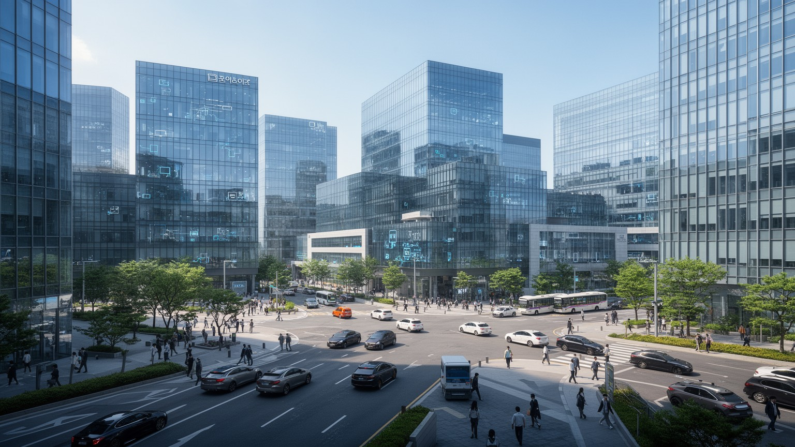
ソウル経済の大きな特徴は、財閥グループの本社機能、金融、法律、広告、研究、大学、メディアが集中し、周辺の製造業都市と強く結びつくことにある。半導体やスマートフォンの工場そのものは郊外や地方、海外に広がるが、投資判断、ブランド戦略、採用、研究開発、資金調達、知財管理は首都圏の厚い専門職に支えられる。江南や汝矣島、乙支路のオフィス街では、グローバル市場を相手にした会議と、長時間労働に支えられた日常業務が同時に進む。財閥は輸出競争力を生む一方、企業統治、世襲、下請け構造、若者の就職競争、中小企業との格差をめぐる批判も受ける。ソウルの産業は高層ビルの中だけで完結せず、配送、警備、清掃、飲食、保育、医療、教育、コールセンターといった仕事を必要とする。経済規模の数字を見る時には、世界企業のブランド力と、都市の裏側で動く膨大なサービス労働を同じ視野に置く必要がある。革新の速度は誇りであると同時に、働く人びとに更新を迫る圧力でもある。ソウルは輸出国家の頭脳であり、競争社会の疲れが集まる場所でもある。スタートアップや研究拠点も増え、若い技術者は大企業の安定と新興企業の自由の間で進路を選ぶ。産業の厚みは都市を強くするが、成功の基準を狭めると、働く人の失敗や休息を許しにくい社会にもなる。海外市場の変動はすぐ雇用と投資に返り、都市の自信を試す。
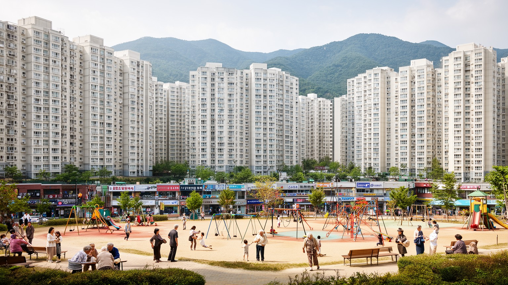
ソウルの生活を語る上で、巨大なアパート団地は欠かせない。高度成長期以降、集合住宅は都市の人口を受け止め、学校、商店、バス停、地下鉄駅、公園、医療施設を近くに置く生活単位になった。江南の高級団地から郊外の大規模住宅地まで、アパートは家族の資産、教育機会、通勤時間、婚姻、老後設計と深く関わる。住宅価格の上昇は若者や子育て世帯に重くのしかかり、賃貸制度、ローン、再建築、投機規制をめぐる政治的な争点を生む。便利な団地は安全で管理された暮らしを提供する一方、似た景観が広がり、古い街路や小さな商店が押し出されることもある。半地下住居や老朽住宅、低所得者の移転問題は、映画や報道で可視化される以上に日常的な課題である。ソウルの住宅は単なる不動産ではなく、階層移動への期待と不安を映す社会の鏡である。エレベーター、駐車場、学区、眺望、駅距離が生活の価値を細かく分け、同じ都市に住む人びとの選択肢を変える。集合住宅の秩序を読むことは、ソウルの豊かさと圧迫を同時に読むことでもある。再建築を望む所有者と、家賃上昇に苦しむ借り手の利害は一致しない。子どもの学区、親の介護、通勤時間を考えるほど、住宅は家族の将来を左右する重い選択になる。団地の中庭や商店街は近隣関係を支えるが、孤立する高齢者や単身者をどう包むかも課題である。
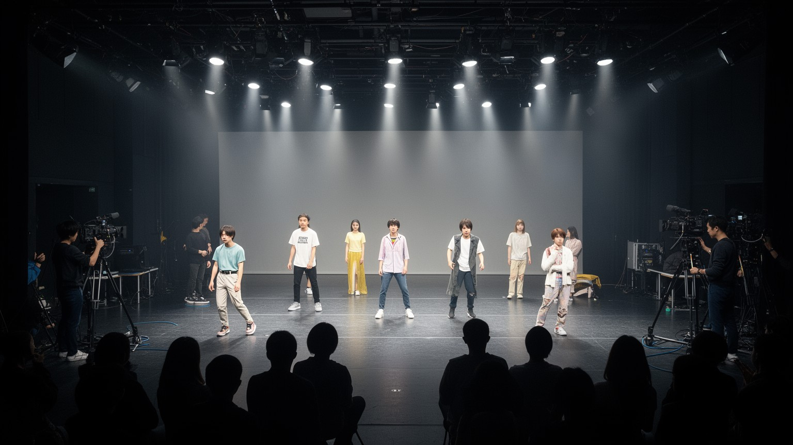
Kポップ、ドラマ、映画、ウェブトゥーン、ゲーム、ファッション、化粧品は、ソウルを世界の若者文化に強く結びつけた。だがKカルチャーは偶然に生まれた流行ではなく、放送局、芸能事務所、練習生制度、音楽制作、振付、配信プラットフォーム、翻訳、ファンコミュニティ、広告、観光が集まる都市産業である。弘大や聖水、江南、上岩などの地区は、制作、消費、発信、巡礼の場所として機能する。国際的な人気は韓国語や食文化への関心を広げ、都市のブランド価値を高める一方、芸能労働の過酷さ、外見への圧力、ファンビジネスの過熱、表現の管理も問題にする。文化産業は華やかな舞台だけでなく、編集、照明、警備、翻訳、衣装、メイク、配送、データ分析の仕事で支えられる。ソウルの街角では、カフェ、ポップアップストア、ライブハウス、撮影地、大学街が文化の経済化と日常化を同時に進めている。世界に届く映像や音楽は、若者に希望を与えると同時に、成功競争の厳しさも見せる。Kカルチャーを読むことは、創造性と労働、都市消費と国家ブランドの関係を読むことでもある。ファンはオンラインで国境を越え、街の小さな店や撮影地にも巡礼の流れを生む。流行の速度が速いほど、制作現場には継続的な投資と人材の消耗が同時に起こる。成功した作品は都市に観光収入をもたらすが、静かな創作環境を守る努力も必要になる。
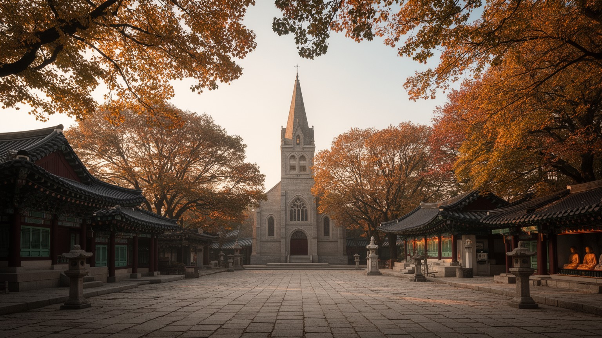
ソウルには仏教寺院、キリスト教会、カトリック聖堂、シャーマニズムの痕跡、儒教的な家族祭祀の記憶が重なっている。宗教は単に礼拝の場に閉じず、教育、福祉、政治運動、民主化運動、葬儀、家族関係に深く入り込んできた。巨大教会の礼拝と小さな寺の静けさ、王宮や宗廟に残る儀礼、独立運動や戦争、軍政期の記憶は、現代的な高層景観の中に別の時間を残す。韓国社会ではキリスト教の公共的な存在感が大きく、仏教は山寺や都市寺院を通じて長い歴史を保つ。儒教的な年長者への敬意や教育観、家族責任は、世俗化が進んでも生活習慣に影響を与える。ソウルを歩くと、祈りの空間と商業の空間が近接し、地下鉄出口のすぐそばに教会や寺院、祭祀用品店が現れる。信仰は都市の対立を和らげる支えにもなれば、政治的な意見の違いを強める力にもなる。歴史記憶をめぐる博物館や慰霊施設は、植民地支配、戦争、分断、民主化を現在の問題として考えさせる。ソウルの宗教と記憶は、過去を保存するだけでなく、社会が何を正義とみなすかを問う場所であり続ける。葬儀場、大学、広場、教会のホールは、家族と市民社会が交わる場所でもある。祈りの言葉と政治的なスローガンが同じ都市に響くことが、ソウルの公共性を複雑にしている。祝祭や追悼の行列は、都市の道路を一時的に記憶の場へ変える。
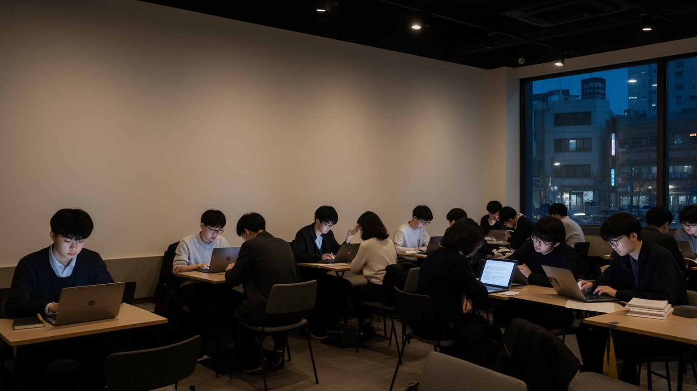
ソウルの若者は、世界的な文化都市の中心で暮らしながら、受験、就職、住宅、結婚、育児、老後不安が重なる強い圧力に直面している。名門大学、語学力、資格、インターン経験、大企業就職は階層移動の入口とされ、学習塾や自習室、カフェ、図書館が長い勉強時間を支える。雇用市場では正規職と非正規職、大企業と中小企業、首都圏と地方の格差が大きく、若者は安定を求めて競争に参加せざるを得ない。配達、カフェ、コンビニ、塾講師、制作補助、ITスタートアップなど、都市の柔らかい産業は多様な仕事を生むが、低賃金や長時間労働、将来の見通しの弱さも抱える。出生率の低下や結婚の先送りは個人の選択だけでなく、住宅費と教育費、働き方の問題として読む必要がある。若い世代はKカルチャーを生み出す担い手であると同時に、その競争的な都市構造に疲弊する当事者でもある。大学街の活気、デモの記憶、オンライン文化、フェミニズムや労働運動の議論は、ソウルが単なる消費都市ではないことを示す。若者の不安は、都市の未来を測る最も敏感な指標である。小さなワンルームの家賃、奨学金の返済、家族への仕送り、兵役後のキャリアの遅れは、統計に出にくい重荷になる。希望を探す動きも強く、協同組合、独立出版、小劇場、社会運動は別の生き方を試す場になっている。就職だけで人生を測らない価値観は、ゆっくりだが確実に広がっている。
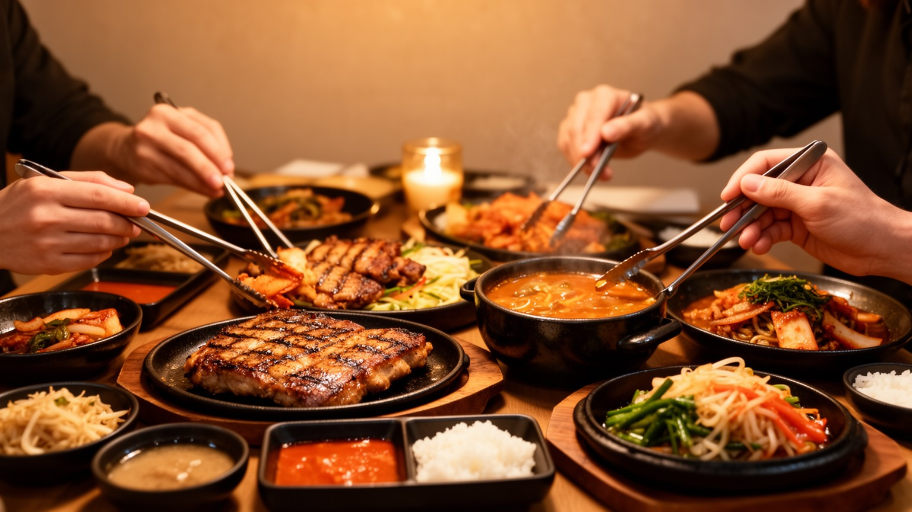
ソウルの食文化は、家庭料理、市場、屋台、焼肉店、チキン店、カフェ、深夜営業の食堂、配達アプリによって形づくられる。キムチ、チゲ、冷麺、トッポッキ、サムギョプサル、参鶏湯のような料理は、観光名物である前に、仕事帰りの会食、家族の食卓、学生の夜食、祝い事や季節の記憶に結びつく。広蔵市場や南大門市場では、食べ物と衣料、生活用品、観光が混じり、都市の古い商いが今も続く。夜のソウルは明るく、弘大、梨泰院、江南、鐘路では飲食、音楽、クラブ、屋台、タクシー、地下鉄終電が人の流れを作る。だが夜の活気は、調理、接客、清掃、警備、配達の労働に支えられ、飲酒文化や過労、ジェンダー安全、家賃上昇の問題も伴う。配達アプリは便利さを広げたが、ライダーの危険や手数料、店舗の負担も生む。ソウルの食を読むことは、味だけではなく、誰が作り、誰が運び、どの時間まで働いているのかを見ることでもある。市場の湯気とカフェの洗練、深夜の看板と住宅地の静けさが並ぶところに、都市の生活リズムが現れる。古い市場では店主の世代交代が進み、若い客を呼ぶために内装やメニューを変える店も増えた。味の記憶を守ることと、観光化で価格や雰囲気が変わることは常に隣り合っている。会食の席では上下関係や親密さが形になり、食事は社会の距離感を測る場にもなる。
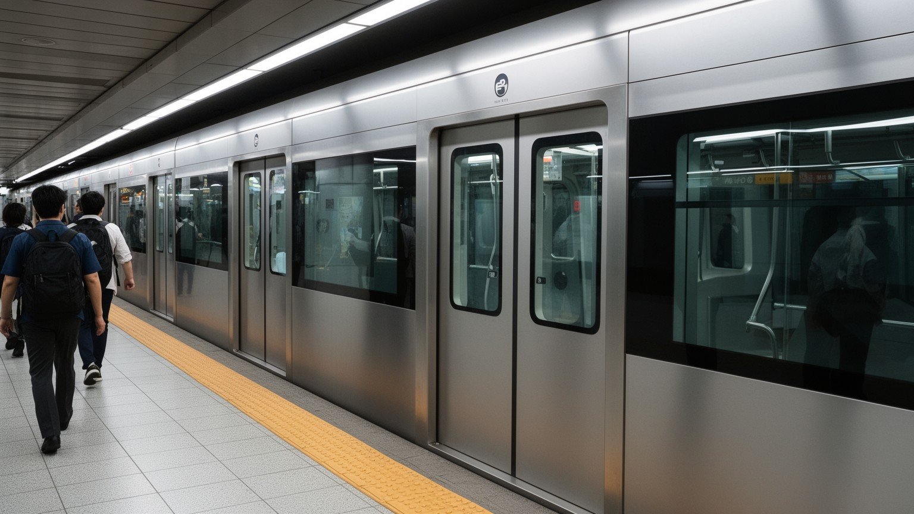
ソウル首都圏の地下鉄と鉄道網は、都市の広がりを理解するための骨格である。中心部、江南、仁川、京畿道の衛星都市、空港、大学街、工業地、住宅地は、複雑な路線と乗換で結ばれ、日々の通勤通学を支える。駅周辺には商業施設、地下街、オフィス、病院、学習塾、集合住宅が集まり、駅距離が住宅価格や生活の便利さを大きく左右する。交通網は車への依存を抑え、観光客にも移動しやすい都市を作る一方、ラッシュ時の混雑、長距離通勤、高齢者や障害者の移動、深夜の帰宅手段は課題として残る。バス、タクシー、シェア自転車、歩道、地下通路は地下鉄を補い、雨や寒さ、暑さの強い季節に都市の使い方を変える。地下鉄は単なる交通手段ではなく、駅名、広告、乗換、車内マナー、路上演奏、駅前広場を通じて都市文化を作る場所でもある。郊外へ延びる路線は住宅供給を支えるが、中心部への依存を強める面もある。移動の便利さはソウルの強みであり、同時に多くの人が長時間を移動に費やす現実を隠さない。路線図を眺めるだけで、都市の階層と成長の方向が見えてくる。駅のバリアフリー化やエレベーター設置は、高齢化する都市でますます重要になる。終電後の移動や深夜労働者の帰宅手段を考えると、二十四時間都市の便利さには見えにくい偏りもある。駅前の再開発は便利さを増す一方、古い商店街の家賃を押し上げる。
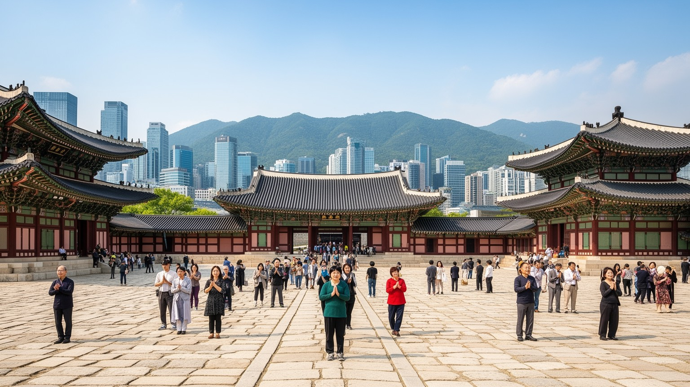
ソウル観光は、景福宮、昌徳宮、宗廟、北村韓屋村の歴史的な空間と、明洞、弘大、江南、聖水、東大門の消費文化が近距離で並ぶことに特徴がある。王宮は朝鮮王朝の儀礼と都市計画を伝え、韓屋の街路は保存と観光化、住民生活の緊張を見せる。明洞は買い物と屋台、教会、外国人観光客の流れが重なり、弘大は音楽、デザイン、若者文化の実験場として変化してきた。江南は教育、医療美容、ブランド消費、ビジネスの象徴であり、東大門は夜の卸売とデザイン産業を結びつける。観光客にとってソウルは移動しやすく、食、買い物、歴史、ライブ、カフェを短い滞在に詰め込みやすい都市である。一方で、観光地化は家賃上昇、住民の静けさ、商店の入れ替わり、文化の単純化を招くことがある。戦争と分断、植民地支配、民主化運動の記憶を伝える場所も、観光の地図に加える必要がある。ソウルの魅力は、新旧の景観を便利に消費できることだけではなく、歴史の傷と現代の速度が同じ道で交差する点にある。短い旅でも、王宮の軸線から市場の路地、地下鉄の混雑まで歩けば、都市の厚みが見えてくる。観光はホテルや免税店だけでなく、案内、清掃、警備、飲食、交通の仕事を広く生む。訪問者が増えるほど、生活の場をどう守るかという問いも強くなる。保存地区では写真を撮る視線と、そこで暮らす人の静けさをどう両立させるかが問われる。
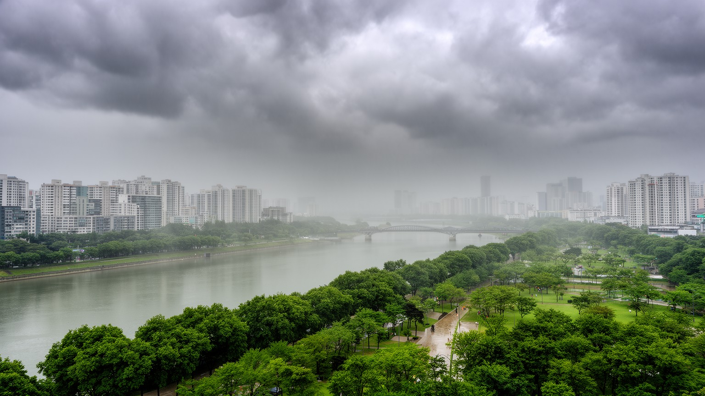
ソウルは温帯モンスーンの影響を受け、冬は厳しく冷え込み、夏は蒸し暑く、梅雨や集中豪雨が都市機能を試す。盆地状の地形と高密度の建物、交通量は、暑熱や大気汚染を感じやすくし、黄砂や微小粒子状物質の問題は健康と生活の不安につながる。冬の暖房、夏の冷房、道路交通、発電、周辺地域からの越境汚染は、空気の質を一都市だけでは解決しにくい課題にしている。豪雨時には地下街、半地下住居、低地の道路、河川沿いが影響を受けやすく、気候変動は住宅の脆弱性を社会問題として露出させる。漢江公園や山地の緑、街路樹、屋上緑化は、熱を和らげる都市インフラでもあるが、地域によって利用しやすさに差がある。大気警報が出る日には、学校、屋外労働、スポーツ、観光の予定が変わり、健康格差も見えやすくなる。ソウルの環境政策は、公共交通、電動車、建物効率、河川管理、緑地整備を組み合わせる必要がある。気候と空気は背景ではなく、日々の通勤、子育て、高齢者の外出、建設労働を左右する現実である。都市の快適さは、季節の厳しさにどう備えるかで測られる。猛暑の日には屋外の配達員や建設労働者が最も大きな負担を受け、寒波の日には高齢者の孤立が問題になる。環境の改善は景観づくりではなく、命と仕事を守る都市政策である。空気の悪い日には、窓を開ける自由さえ小さな判断になる。
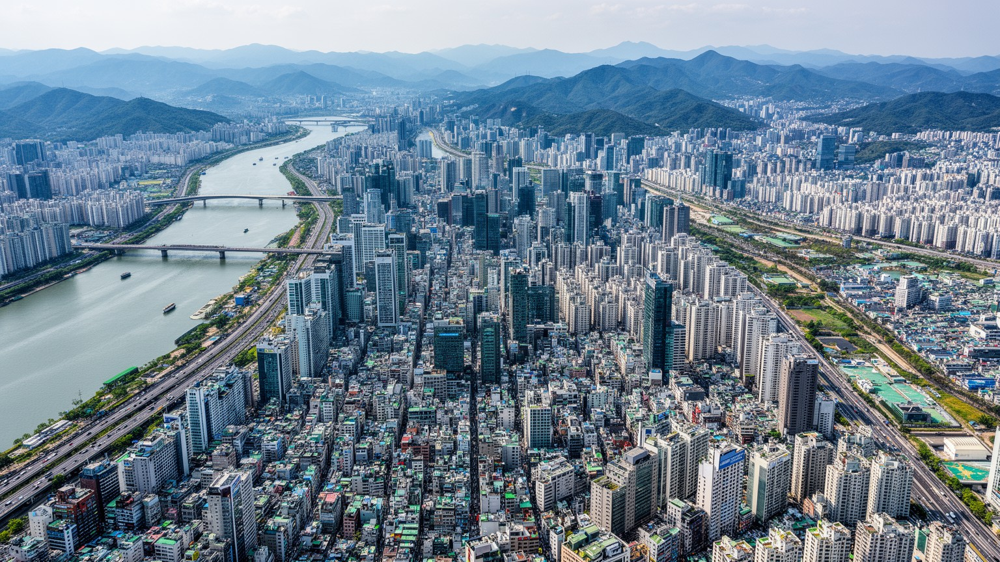
ソウルは、輸出産業の司令塔、分断国家の首都、Kカルチャーの発信地、集合住宅の巨大な生活圏、教育競争の舞台、宗教と民主化の記憶を抱える都市である。漢江の橋を渡る通勤、地下鉄の乗換、王宮の観光、江南の学習塾、弘大の音楽、教会の礼拝、市場の食事、配達員の移動は、別々に見えて一つの都市の速度を作る。華やかな映像産業や電子企業の成功は国際的な誇りを生むが、住宅費、若者の不安、労働時間、ジェンダー対立、高齢化、半地下住居、地域格差は都市の陰影を濃くする。北方の安全保障リスクは、平時の活気の背後に常に存在し、外交や軍事だけでなく日常の想像力にも影響する。ソウルを平面的な流行都市として見ると、分断、労働、信仰、家族、住宅、環境の複雑さを見落とす。逆に、緊張だけで見ると、街が持つ創造性、食の楽しさ、公共交通の便利さ、若者文化の柔軟さが見えなくなる。必要なのは、成功と疲労、記憶と未来志向を同時に読む視点である。ソウルは東アジアの近代化が生んだ光と圧力を、高密度の街路に凝縮している。王宮の石畳、地下鉄の混雑、川沿いの公園、団地の窓明かりを同じ地図に置くと、都市の本当の広がりが見える。ソウルは速く変わるからこそ、過去をどう持ち運ぶかが常に問われる。数字の大きさだけでなく、住民が感じる不安と誇りを合わせて読むことで、都市の輪郭は立体になる。